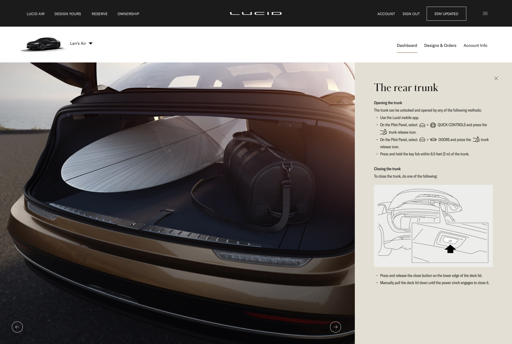
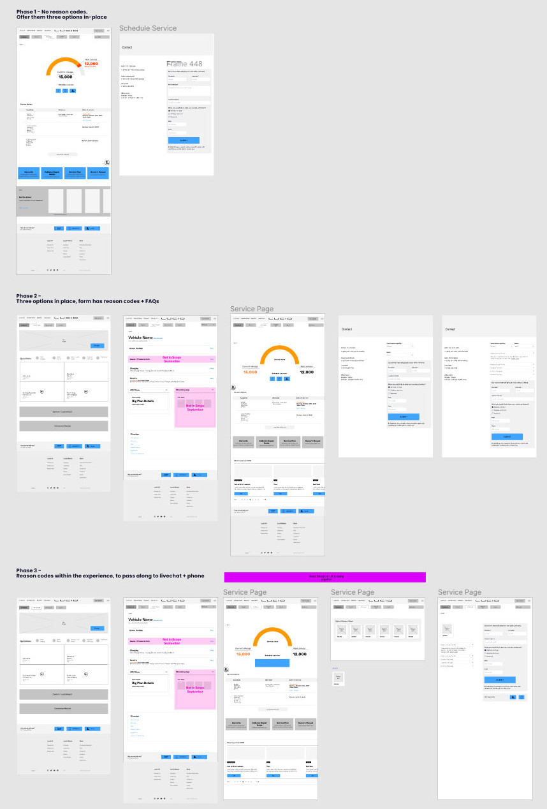
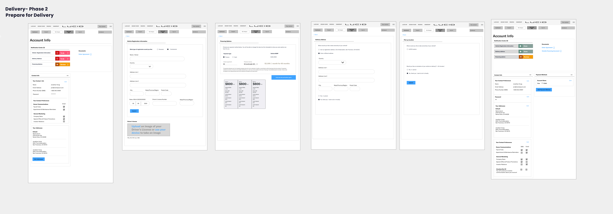
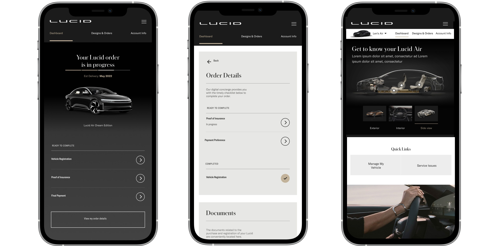
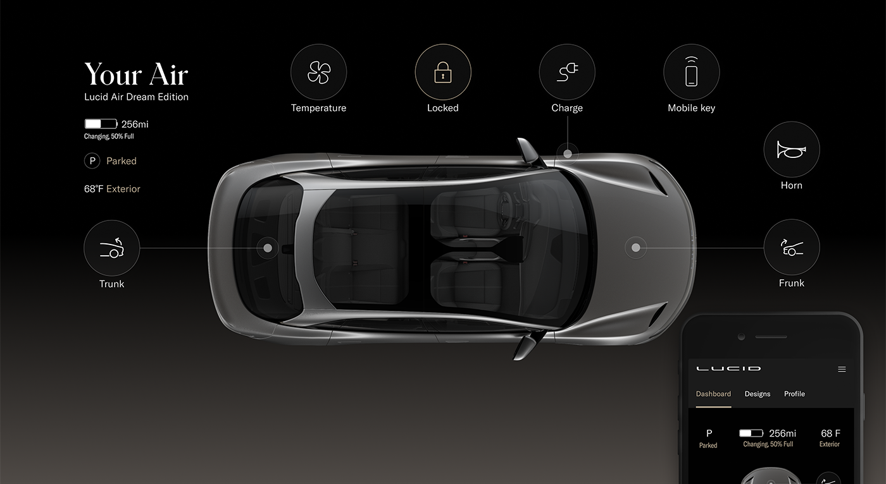
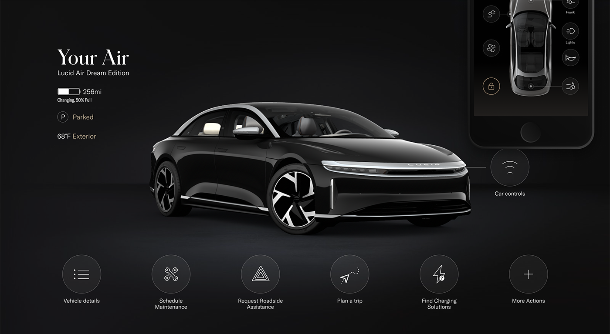

Lucid Motors
- SaaS
- Product
- Manufacturing
Business Goals
Build a best in class customer portal for owners by the time vehicles hit the street. We needed a white-glove experience for the first 1,000 vehicles hitting the roads that could be scaled up quickly for a much larger audience of 10,000.
Challenges
The portal was available to anyone who created an account. Internal work flows had been created in silos because of the fast paced environment. Understanding each PM teams and their roadmaps to make sure every department gets what it needs from the portal. Business solutions for the short and long term were still being negotiated. Many APIs needed to add some of the important portal information and functionality would not be ready in time for launch.
Solutions
Personalize the portal for the different user groups. Create a crawl, walk, run approach. Help hardware engineers understand that software is always evolving. Agile process- Release updates often.
Role
Knowledge Center/UX Director/Product Manager
Knowledge Center/UX Director/Product Owner: Presenting solutions to get stakeholder buy-in, Led workshops with service, delivery and finance teams. Created Roadmap for a year out, Managing a team of UX designers, a copywriter and art directors. Helped create user stories for development.
Research & Analysis
What is a best in class portal?
- 15 Stakeholder Interviews
- Interviews with vehicle owners of Tesla, Ford and VW
- Competitive Analysis of other brands buying, delivery and scheduling service processes
- Studio visits and on-line demos
- A content audit of the site
- Demos of work in progress at Lucid
- Existing and in-progress user flows
- Analytics information

Educate customers about their vehicles
The learning process should be individual based on previous EV ownership and other factors like where you live. The manual content could be used in new ways until other content could be created.
Personalize experience & content
We could use information from test drives and demos if they are logged into Salesforce to customize the portal.
Reservation holders would see information on preparing for delivery and tasks they needed to do like sign documents, get insurance and financing, etc..
Owners would get a walkthrough and audio playlist.
Female owners and drivers
Electric vehicles are dominated by male ownership. We needed to focus on the value added features like space and charge speed. We needed to change the way the vehicles were presented overall.
Using Omnichannel data to personalize
We had to sell through the idea that the portal was not just for owners, it gives us the opportunity to convert designs to reservations. We wanted to design a portal that would evolve depending on where you were in the ownership process. The customer experience has many touchpints: the showroom, the .com and the app. We took a systematic approach and pitched a big picture experience to the key stakeholders which meant adding pages and functionality to the .com and to Salesforce.

Creating a vision for the future: Crawl. Walk. Run.
I worked closely with the stakeholders of customer service, the app team, finance and delivery to build crawl, walk, run roadmaps. These departments depended heavily on the portal to decrease burn rate.

Strategy: Educating and creating investment
Content needed to be specific for the type of user while highlighting the luxurious materials and high-tech vehicle details. I scrubbed the owners' manual, .com, email marketing, studio print collateral, and reviewed notes from my demos with showroom salespeople. I created a content matrix for the copywriters to write and amass interesting seasonal and personalized content. Since we were short on time, we tried to reuse as much content as possible from manuals and the car interface.
A new owner's Quickstart guide was suggested with an audio playlist that took advantage of the hi-fi surround car audio.

Workshop #1
Service: Phase 1,2,3 - releases every three months
I held workshops with the service, documents, API and customer service teams to nail down what would be available on launch and what would be in the roadmap for later. Self service saves a lot of time and money but could not be implemented quickly. We used contact forms with dropdowns for the first launch and planned to add reason codes to the second release.
Workshop #2
Delivery & multi-channel readiness
How would they get their vehicle and pay for it? How would the system know when they are an owner?
We had a lot to figure out in these workshops. After downloading information and workflows from many departments, it was important to decide how financing and payments would be incorporated into the delivery process as a team. We also needed the user to be able to see when their car would be ready and prepare their home and documents.


Reservation to Ownership: Building habits
Customers will stay informed about the process through a status page, and announcements will be posted on the customer portal.
The portal handles all of the documents needed to get delivery of your vehicle including financing. It also provides more detailed information on charging at home. We were building the habit of having owners go to their portal to complete tasks and find important information. Owners can manage multiple cars in their portal.

Final designs
The time pressure of a launch limited our response, but we were able to make a meaningful impact for when the first round of vehicles were delivered. The EV space is exciting and it is the future. The adoption of electric vehicles has been slower than expected. Conversion has to do with how the charging and the ownership experience is presented from the showroom to the portals.
